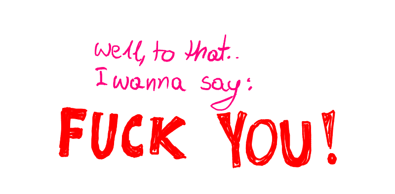
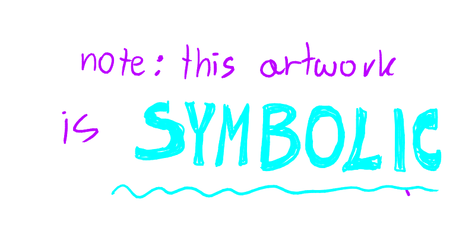
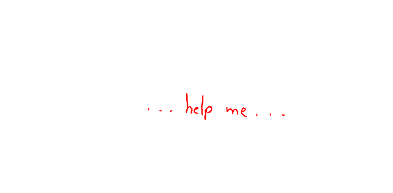

TW: slash flash, extreme nihilism, depression, trauma mention, honestly everything given how sensitive people have become about things that aren't famili friendly.
In this post I wanted to tell you a story about how a certain person annoyed me so much that it lead to something raging inside me and causing me to break. Suddenly I was no longer ashamed of what I had in my digital sketchbook... Well okay, not many 'edgy' things were in it. The ideas in my mind, on the other hand.... oh I have quite a few.
I decided not to write about the argument that 'flipped the switch' in detail, because I wouldn't want this person to find this and feel too special about themselves. All you need to know is that I felt greatly disrespected as an artist.
Somehow that, combined with a certain amount of... I'm not gonna call it admiration, but it's a form of weird kinda respect, towards someone I consider an online friend... Yeah. Switch flipped.
Before I tell you what this piece represents and how it came to be, I want to say something about a major (in my opinion) problem.
The problem being the rise of purism. This topic is so broad it should be a video, but something has to be said here.
It's worrying how sensitive people are becoming. Everything is 'traumatic' (No, I do NOT mean that people with PTSD are being too sensitive, this is about the kind of people who start to cry because they saw a hint of erotism in a movie or a bread cutting video on TikTok etc.) everything controversial and/or mature 'should be kept away from the internet because OH NO! KIDS COULD SEE IT!'. You can't deny that the numbers of anti-intellectual hyper-religious people population are raising. Everything is 'problematic'.... 
(I'm starting to sound like Ronnie Radke help...)
You all get manipulated by capitalism (yes! of course its big corporations!) to keep everything family friendly, everything modest, everything 'pure'. All because companies don't want their ads to (gasp!) end up two scrolls away from someone explaining BDSM on social media platform. (What a horror!) Its so easy to use religious values to achieve the desired effect on the society. So easy. So pure. So many negative psychological consequences for the people.
It fuels sexism, it fuels queerphobia, it causes actual damage.
Art has always been a medium used to convey emotion, it was supposed to make you feel something, make you contemplate, sometimes ragebait you, sometimes it was meant to manipulate you!
It's no one's but parent's responsibility to make sure their kids don't see something they shouldn't, and the way y'all get manipulated by cults and corporations to behave a certain way, live a certain way and think a certain way is ... no words, honestly! Wake the hell up!
I am a victim of this social engineering too!
For years I felt shame when I wanted to draw something that was even remotely NSFW, I was scared to dress how I wanted because it was 'slutty' in the eyes of others (who cares?). I avoided any media that were anyhow suggestive like a dumb little immature kid. Because the society teaches you to be ashamed of any sexual thoughts you have, and with certain type of trauma it can snowball into situation where a person feels like they are dirty and deserve all the worst because they liked a webtoon that was labelled 18+ (and we know webtoon is objectively VERY mild)
I was basically ashamed of being a living person with emotions and feelings. But what can you expect when someone would get called a whore for using eyeliner as a teenager?
I was too much of a coward to express myself and to use the power to create whatever the hell I wanthave as an artist. I ENVIED ARTISTS WITHOUT THIS PROBLEM SO MUCH!!
Yet here we are, in our new era of art. It's gonna be pretty, it's gonna be ugly, it's gonna be triggering. We've discovered that we can vent through it, it actually gives us a sense of katharsis and there is absolutely no reason to not show it to the world. You either can handle it or this place simply isn't for you :)
LET'S FINALLY TALK ABOUT THE ART SHALL WE?
It started as an attempt to capture how majestic pole dance is, then we went through a mental breakdown that had a lot to do with our PTSD, so the rendering got abandoned for months, we only added something to it from time to time but our dumb conditioned brain felt disgustingabout creating it, as if it was wrong.. logic where? Pole dance is a sport goddamnit! And a hella impressive one!
Then.... another mental breakdown happened, and some may remember how we posted the w.i.p that was all 'cut' and bleeding on our TikTok story... thank's for asking btw, no we are not okay.
But the concept felt interesting, we wanted to explore it.
But we abandoned it again.
Then someone pissed Zebroid off totally and he decided to use his newly acquired skill of drawing blood here.
And we decided that in the era of the rise of christian puritanism we will be the awful 'problematic' artist who isn't scared of judgement.
It's hard to explain what we tried to convey here, because first we would have to trauma dump y'all and we simply don't want to.
Let's try as much as possible though. Cycle through both artworks multiple times, preferably quickly before you proceed to read. It may be easier. Imagine it flashing before your eyes alterating between both versions until it makes you uncomfortable.
Trauma. It seeps through your brain, feelings and memories, paints them black and rotten with guilt, disgust, disbelief and self hatred. The harder you try to not think about it, the worse it gets. Whatever you do, its always there. It changes you. Renders you unable to feel emotions properly. Makes you dirty. (not really, no. But you feel like so!) You try to silence it, but it always comes back. You try to run from it and run away from anything that reminds you of it. It doesn't work. You give in to the feeling that you are nothing but damaged, nothing matters, so you can become the worst version of yourself anyway. You keep trying to reenact your trauma (conciously or not... thats textbook PTSD and cPTSD symptom.)and gaslight yourself that you're reclaiming it (ha). Only to be constantly hit with the flashbacks.
Nothing helps. You are stuck hating yourself when something remotely good happens to you, you feel weirdly euphoric when you suffer. You are numb, you are in pain, you can't feel, you feel everything at the same time.
You feel like a fox stuck in a bear trap. Except you don't want to chew your leg off to be free, no.
You wonder if you can somehow open it then have it crush your fucking skull.
This art represents the painful suspension between self-acceptance and letting yourself feel happy and free, and the immeasurable disgust you feel because of it. It represents anger and helplessness, hatred and feeling of being betrayed by the world - not just the abusers. Because ultimately, you were failed by your family, by schools, by law enforcement, you were failed by everyone who didn't step in to save you. And it ruined you.
Despite a lot of healing that happened within us, life still feels like hell, it still feels like there is only one way out. In place of one issue we learn how to deal with we find two other problems. Healed enough to draw the changeling (who in a way obviously is representation of us), pole dancing as a symbol of feeling like we deserve to feel pretty, free and appreciated, but disgusted enough by emotions that led to its creation and which were felt during the creation that blood had to be spilled.
Well I guess this new era is just us trying to substitute self harm.
Also, did this post seem extreme to you? Because the problem is bad enough writing this was extremely hard for me.
...I still can't properly express that I have a problem...